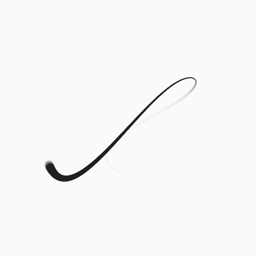
Con software de análisis de Big Data, se relevaron las menciones en Twitter vinculadas al primer año de Gobierno de Cambiemos entre el 10 de diciembre de 2015 y el 10 de diciembre de este año, geolocalizadas dentro del territorio nacional. En total se analizaron más de 11 millones de menciones de más de 5 millones de usuarios únicos de Twitter Argentina.
La información que se analiza no es consultada, es información expuesta por los usuarios de manera espontánea. Son menciones, interacciones y “reacciones” -como el “like” por ejemplo- que de acuerdo a su connotación expresan un grado de sentimiento — positivo, neutral o negativo- capaz de reflejar un indicador de valor para el objetivo.
El análisis se concentró en 4 tópicos:
1. Ejes de campaña
2. Temas que más preocupan a los argentinos
3. Funcionarios del Gobierno
4. Mauricio Macri
Se dividió el análisis entre el Primer y el Segundo semestre.
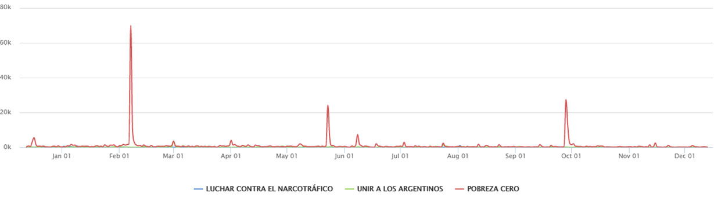
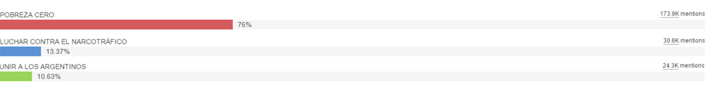
De los tres ejes de campaña, Pobreza Cero fue el tema que más menciones tuvo: 174 mil menciones (75%) seguido por Narcotráfico (30 mil, el 13,3%)
y la Unión de los argentinos (24 mil, el 10,6%).
Sentimenth
Luchar contra el Narcotráfico fue el eje que más expectativas generó durante el primer semestre con un 67% de conversación positiva asociada,
cayendo 34 puntos en la segunda mitad del año.
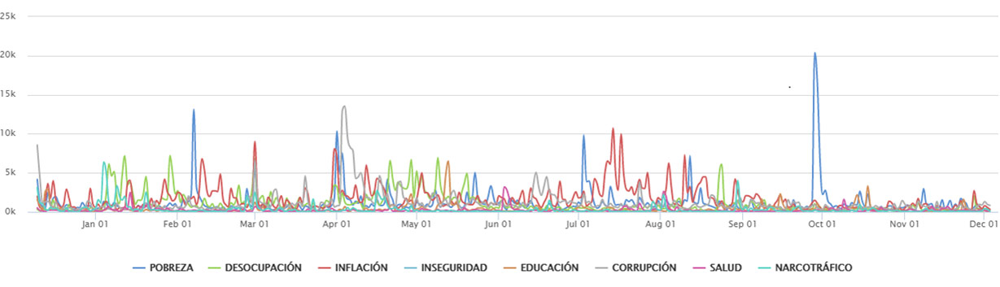
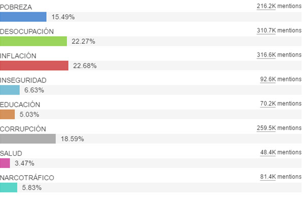
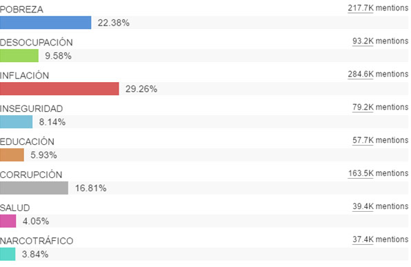
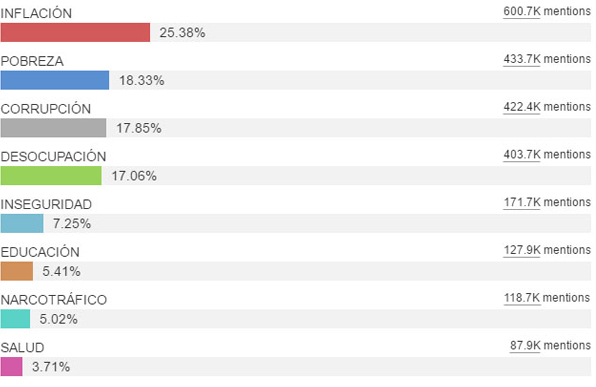
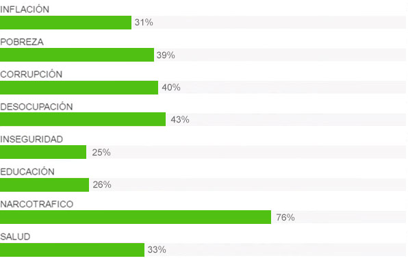
La Inflación se mantuvo al frente de los “Problemas que más preocupan a los argentinos” durante todo el año con 270 mil menciones. Lo siguieron Pobreza (188 mil menciones) y Corrupción (177 mil).
Sentimenth
En relación a los problemas que más preocupan a los argentinos, se registró aumento de conversación positiva vinculada a Pobreza y Narcotráfico, mientras que Inseguridad fue el tema que mayor sentimiento negativo le sumó al gobierno.
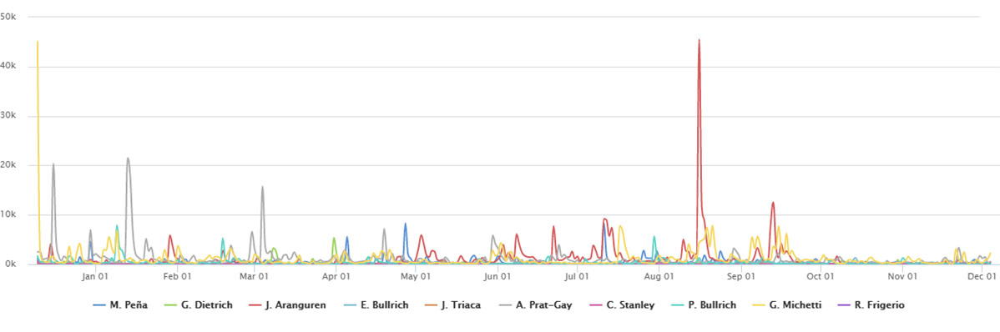
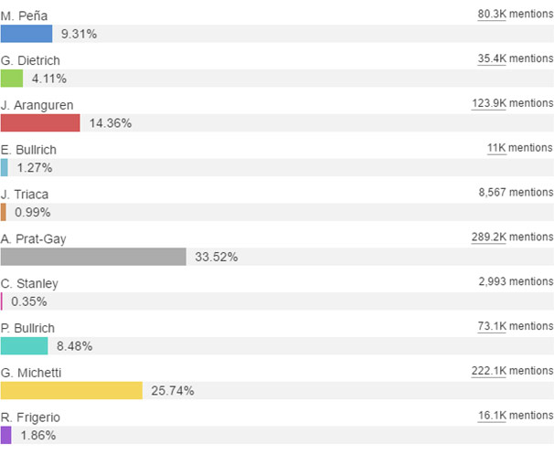
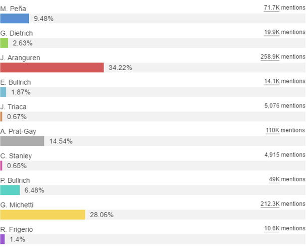
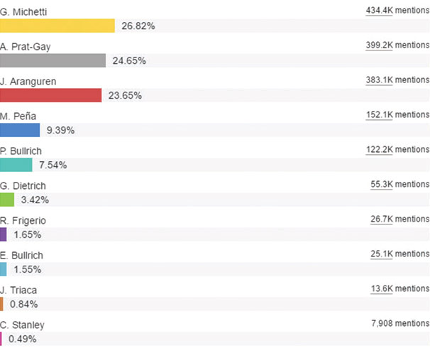
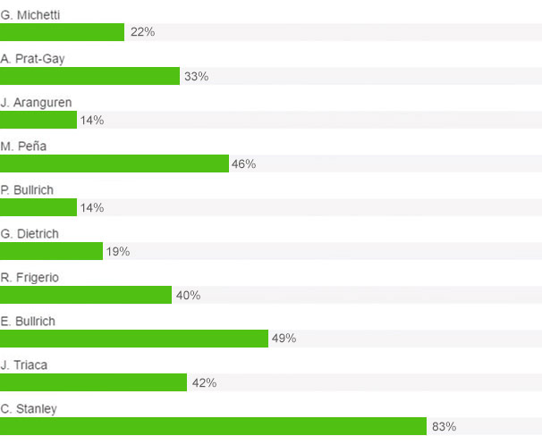
Entre los funcionarios más menciones, en el primer lugar se ubicó la vicepresidenta Gabriela Michetti con 434 mil menciones. La siguen de cerca el ministro de Hacienda Alfonso Prat Gay (400 mil) y el ministro de Energía Juan José Aranguren (383 mil).
Sentimenth
Esteban Bullrich y Carolina Stanley son los funcionarios que aumentaron el sentimiento positivo sobre el segundo semestre mientras que Juan José Aranguren el que canaliza mayor volumen de conversación negativa vinculada al Gobierno.
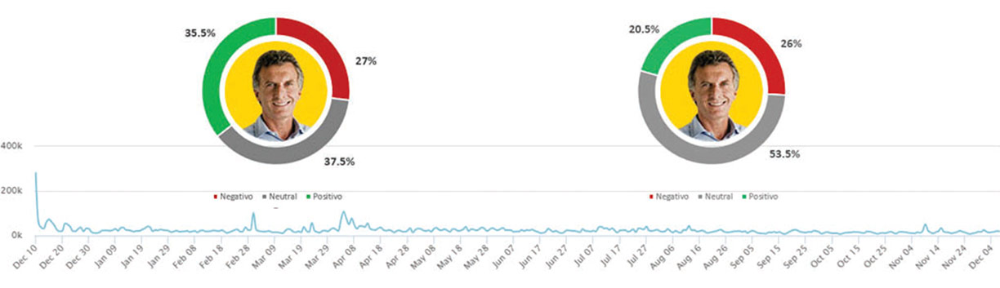
La asunción del Presidente (diciembre 15), el caso “Panamá Papers” (abril/mayo) y la presencia de Macri en el Congreso (marzo) fueron los tres temas que más conversaciones generaron en torno a la figura presidencial.
Sentimenth
Durante el primer semestre, el 35.5% de la conversación vinculada a Mauricio Macri fue positiva (la negativa alcanzó el 27%). El 37.5% de la conversación fue neutral (sin sentimientos a favor ni en contra).
La conversación positiva vinculada a Mauricio Macri bajó 15 puntos (del 35,5% al 20,5%) entre el primer semestre y el segundo.